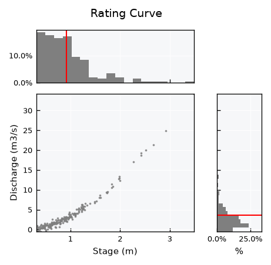
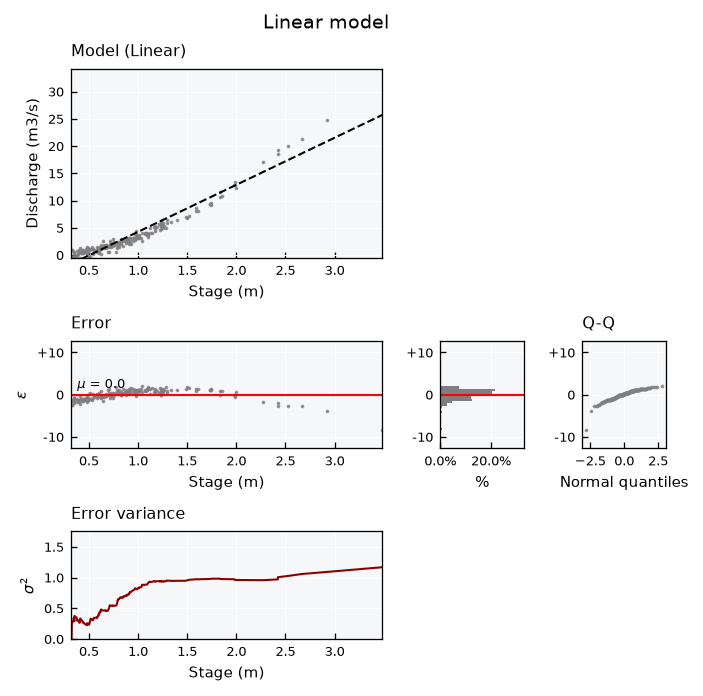
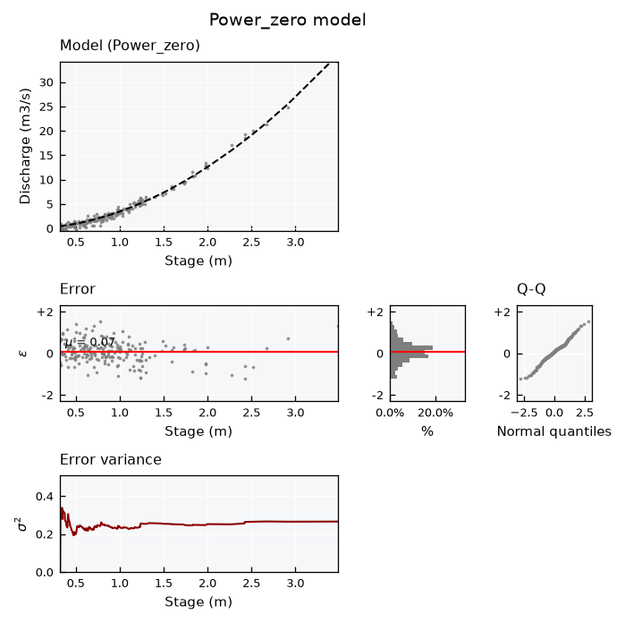
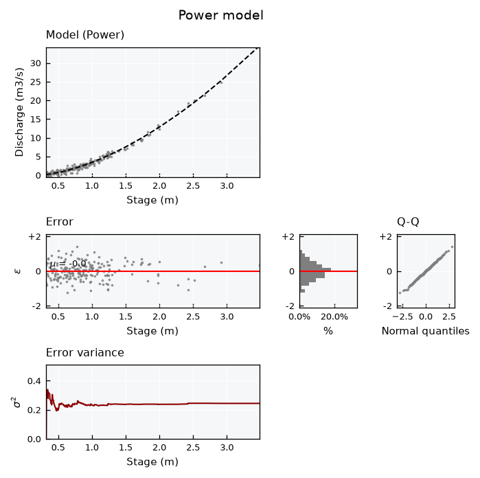

Bivariate data - Models#
This tutorial focuses on fitting simple regression models to bivariate data using plans, and assessing them with the model panel and fit metrics.
See also
Check out the Bivariate data - Basics tutorial first.
Notebook setup#
For users running this tutorial as a Jupyter Notebook, this cell must be executed first:
import sys
from pathlib import Path
import numpy as np
import pandas as pd
# Install `plans` in `google.colab`.
# Use `pip install plans` for other environments.
if "google.colab" in sys.modules:
import os
os.system(f"{sys.executable} -m pip install -q plans")
# This avoids warnings related to uninstalled fonts
import logging
# Set the matplotlib font manager logger to only show errors (hides warnings)
logging.getLogger('matplotlib.font_manager').setLevel(logging.ERROR)
# define output folder
OUTPUT_DIR = Path("outputs/bivariate")
OUTPUT_DIR.mkdir(parents=True, exist_ok=True)
print(f"Outputs will be saved to: ./{OUTPUT_DIR}")
Outputs will be saved to: ./outputs/bivariate
Create synthetic rating curve#
Stage-discharge relations (rating curves) are a classic case for model fitting in hydrology. Discharge usually starts at a stage offset (the gauge zero is below the channel bottom), so lets make one with \(h_0 = 0.2\) m plus gaussian noise. Stages are drawn from a skewed (gamma) distribution, since low flows are far more frequent than floods in a real gauging record:
from plans.datasets.analyst import Bivar
# make synthetic power-law data with a stage offset
rng = np.random.default_rng(seed=42) # ensure reproducibility
h = 0.3 + rng.gamma(shape=1.5, scale=0.4, size=200) # skewed to low stages
q = 5 * np.power(h - 0.2, 1.6) + rng.normal(loc=0, scale=0.5, size=len(h))
bv = Bivar(name="Rating Curve", alias="RC")
bv.xname = "Stage"
bv.xunits = "m"
bv.yname = "Discharge"
bv.yunits = "m3/s"
bv.set_data(x=h, y=q)
bv.view()

Available models#
Models are stored in the .models dictionary. Each entry holds the function, its formula, a Setup table of parameters (initial guesses before fitting) and, once computed, the model Data and Metrics:
for model_type, model in bv.models.items():
print(f"{model_type:<12} {model['Formula']}")
Linear f(x) = c0 + c1 * x
Power f(x) = c2 * ((x + c0)^c1)
Power_zero f(x) = c1 * (x^c0)
Fitting models#
The .fit() method runs a least squares fit and stores the mean and standard deviation of parameters in the Setup table. The model layout shows the fitted curve, how the error variance evolves along x, the errors, their histogram and a Q-Q plot against the normal distribution.
Linear model#
The simplest model. A straight line can not follow the curvature, so errors show a clear pattern along x:
bv.fit(model_type="Linear")
print(bv.models["Linear"]["Formula"])
bv.models["Linear"]["Setup"]
f(x) = c0 + c1 * x
| Parameters | Mean | SD | |
|---|---|---|---|
| 0 | c0 | -4.373973 | 0.181619 |
| 1 | c1 | 8.632297 | 0.171988 |
Fit metrics:
bv.models["Linear"]["Metrics"]
{'r': 0.9628756752076765,
'rho': 0.9634260856521415,
'R2': 0.9271295659066388,
'RMSE': 1.2349857669571258,
'MAE': 0.919012840087451,
'Bias': 2.4696790784111732e-08}
Model panel:
bv.view_specs["layout"] = "model"
bv.view_specs["model_type"] = "Linear"
bv.view_specs["title"] = "Linear model"
bv.view()

The model Data holds the predictions (y_Mean) and the errors (e_Mean, model minus observed):
bv.models["Linear"]["Data"].head()
| x | y | y_Mean | e_Mean | |
|---|---|---|---|---|
| 0 | 0.317913 | -0.180704 | -1.629649 | -1.448945 |
| 1 | 0.318673 | -0.315874 | -1.623089 | -1.307215 |
| 2 | 0.323125 | 0.857127 | -1.584662 | -2.441789 |
| 3 | 0.325952 | 0.987234 | -1.560258 | -2.547492 |
| 4 | 0.344702 | -0.217002 | -1.398398 | -1.181397 |
Power_zero model#
A power law with root at zero. It follows the curvature, but can not represent the stage offset:
bv.fit(model_type="Power_zero")
print(bv.models["Power_zero"]["Formula"])
bv.models["Power_zero"]["Setup"]
f(x) = c1 * (x^c0)
| Parameters | Mean | SD | |
|---|---|---|---|
| 0 | c0 | 1.873139 | 0.014986 |
| 1 | c1 | 3.431515 | 0.043597 |
Fit metrics:
bv.models["Power_zero"]["Metrics"]
{'r': 0.9935712183539649,
'rho': 0.9634260856521415,
'R2': 0.9867430899580296,
'RMSE': 0.5267534985525246,
'MAE': 0.4079012884987642,
'Bias': 2.058272102394914}
Model panel:
bv.view_specs["layout"] = "model"
bv.view_specs["model_type"] = "Power_zero"
bv.view_specs["title"] = "Power_zero model"
bv.view()

Power model#
A power law with a translational parameter c0, which captures the stage offset (\(c_0 \approx -h_0\)):
bv.fit(model_type="Power")
print(bv.models["Power"]["Formula"])
bv.models["Power"]["Setup"]
f(x) = c2 * ((x + c0)^c1)
| Parameters | Mean | SD | |
|---|---|---|---|
| 0 | c0 | -0.184590 | 0.030121 |
| 1 | c1 | 1.655100 | 0.038360 |
| 2 | c2 | 4.789241 | 0.257472 |
Fit metrics:
bv.models["Power"]["Metrics"]
{'r': 0.9941759516644231,
'rho': 0.9634260856521415,
'R2': 0.9883855277023155,
'RMSE': 0.4930443828553082,
'MAE': 0.3951174167884024,
'Bias': -0.05401654624550328}
Model panel:
bv.view_specs["layout"] = "model"
bv.view_specs["model_type"] = "Power"
bv.view_specs["title"] = "Power model"
bv.view()

Comparing models#
Collect the metrics of all models in a table:
dc_metrics = {}
for model_type in bv.models:
dc_metrics[model_type] = bv.models[model_type]["Metrics"]
df_metrics = pd.DataFrame(dc_metrics).T
df_metrics
| r | rho | R2 | RMSE | MAE | Bias | |
|---|---|---|---|---|---|---|
| Linear | 0.962876 | 0.963426 | 0.927130 | 1.234986 | 0.919013 | 2.469679e-08 |
| Power | 0.994176 | 0.963426 | 0.988386 | 0.493044 | 0.395117 | -5.401655e-02 |
| Power_zero | 0.993571 | 0.963426 | 0.986743 | 0.526753 | 0.407901 | 2.058272e+00 |
Note that \(\rho\) is the same for all models: they are all increasing curves, so they rank the predictions in the same order. Here \(r\), \(R^2\) and the errors are what separate the models. Also, \(R^2\) equals \(r^2\) only for the least-squares linear model:
print(f"Linear R2: {df_metrics.loc['Linear', 'R2']:.4f}")
print(f"Linear r^2: {df_metrics.loc['Linear', 'r'] ** 2:.4f}")
Linear R2: 0.9271
Linear r^2: 0.9271
Error normality#
Assess if model errors are normal via the .get_error_normality() method:
ls_dfs = []
for model_type in bv.models:
df = bv.get_error_normality(model_type=model_type, clevel=0.95)
df.insert(0, "Model", model_type)
ls_dfs.append(df)
pd.concat(ls_dfs, ignore_index=True)
| Model | Test | Statistic | p-value | is_normal | Confidence | |
|---|---|---|---|---|---|---|
| 0 | Linear | Kolmogorov-Smirnov | 0.084378 | 1.094225e-01 | True | 0.95 |
| 1 | Linear | Shapiro-Wilk | 0.876952 | 1.074658e-11 | False | 0.95 |
| 2 | Linear | D'Agostino-Pearson | 113.712185 | 2.031013e-25 | False | 0.95 |
| 3 | Power | Kolmogorov-Smirnov | 0.039072 | 9.083112e-01 | True | 0.95 |
| 4 | Power | Shapiro-Wilk | 0.997095 | 9.728016e-01 | True | 0.95 |
| 5 | Power | D'Agostino-Pearson | 0.095267 | 9.534831e-01 | True | 0.95 |
| 6 | Power_zero | Kolmogorov-Smirnov | 0.061591 | 4.172193e-01 | True | 0.95 |
| 7 | Power_zero | Shapiro-Wilk | 0.990347 | 2.006875e-01 | True | 0.95 |
| 8 | Power_zero | D'Agostino-Pearson | 0.870901 | 6.469732e-01 | True | 0.95 |
Set parameters manually#
Parameters can also be set by hand with .update_model(), for instance to test a known reference curve. Metrics and the model data are updated accordingly:
bv.update_model(params_mean=[-0.2, 1.6, 5.0], model_type="Power")
bv.models["Power"]["Metrics"]
{'r': 0.9940339099303578,
'rho': 0.9634260856521415,
'R2': 0.9878227099891589,
'RMSE': 0.5048491143405004,
'MAE': 0.40285840445680393,
'Bias': 0.8702160614684503}